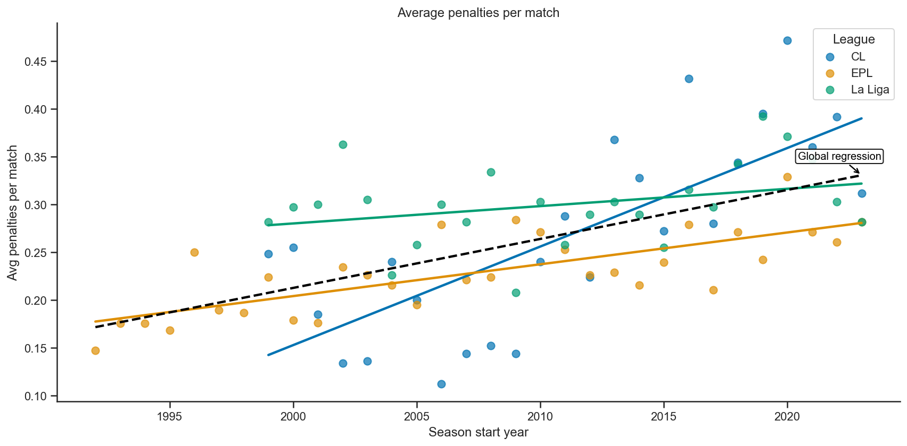
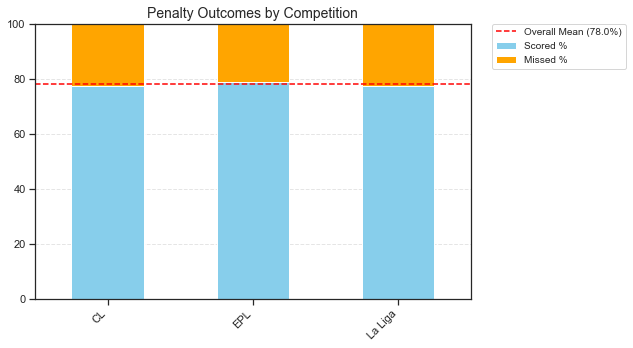
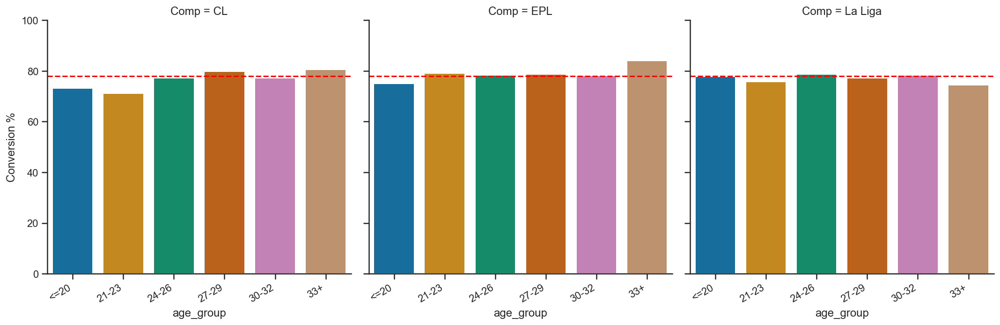
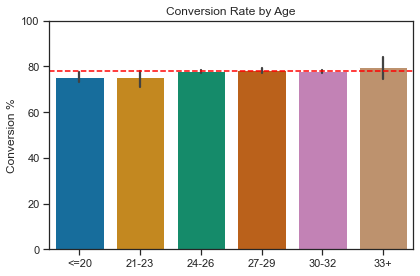

Introduction
‘There’s no fear at that age’ is a familiar refrain from pundits. The idea goes that young players are naive, innocent; they take risks, they express themselves, and in an ‘ignorance is bliss way’ they don’t show nerves the way older players do - or something.
I guess the fearlessness theory rests on the presumption that young players think they have all the time in the world so a few blunders early on in their career won’t be the end of it. Or, there is so little pressure applied on them relative to senior players that they play with freedom and can ‘express themselves’. I can understand that to a certain extent, although young players could easily go in the other, overawed direction. 18 year old me would definitely have fallen into the shitting myself camp. But then, it could be argued that I don’t have the mentality of an elite athlete.
Nevertheless, I’ve always been skeptical. They are young adults, not toddlers. And loads of promising young careers go up in smoke; the consequences for these players’ lives are devastating. Look at Jose Baxter, for example. I would imagine most young players have seen enough academy cohort colleagues fall by the wayside that they are acutely aware of their vulnerability. So I wanted to dig into this throwaway comment from pundits and find some way to interrogate it statistically.
The metric that is the easiest to isolate as a corollary for fear is the penalty. That’s because another fairly common idea is that every elite player should be able to tuck away a penalty. And that, 12 yards from goal, it is nerves rather than technique which undoes the pro player. While the best way to explore fear would be penalty shootout data - where every single kick is critical - I haven’t got that and will normal-time penalties as a proxy. Of course, these don’t have quite the same almighty importance but they still tell us something about the effects of nerves.
This is part of a series of analyses I’m doing where I fixate on penalties. It just drives me crazy how prevalent they are. It increasingly like every final is decided on penalties and every match a penalty is awarded. And it’s not just because of VAR. These increases have been ongoing for some time. See Figure 1. Or the interactive version Figure 2, though I haven’t added many leagues so there’s not much to play around with. At time of writing, Harry Kane is having the season of his life - so the story goes - with 14 goals in 7 games. Astonishing, yes, but 6 of those have been penalties… Without penalties he’s at 8 in 7, which is still very good but well short of his current Dixie Dean trajectory. Anyway, I digress. If you’re interested, my main project is this one:
- What would happen if players who won the penalties were the only ones who got to take them? https://eoind.github.io/analytics/football/penalty_takers/
- And now for… are young players really fearless? What does the penalty data say? (read on to find out!)
Methodology
Penalty sampling
I have whipped up the following (courtesy of Stathead / FBref):
- Every normal time penalty taken in the Premier League - in other words, since the 1992/1993 season
- Every normal time penalty taken in the Champions League since the 1999/2000 season
- Every normal time penalty taken in La Liga since the 1999/2000 season
| League | Total Penalties |
|---|---|
| Premier League | 2892 |
| La Liga | 2956 |
| Champions League | 925 |
| Total | 6773 |
Age bands
Finally, I have constructed some age groupings. See . This is in order to prevent small samples for different ages giving unreliable values. For example, there is a 20% difference in the success rate for La Liga 19 year-olds compared 20 year-olds. However, given these age groups have relatively few attempts it’s easy for the data to get a little wild.
I think the groups I have created are fairly logical. At the top and bottom end we’ve got open intervals - we can have players from 0 to 20; though the youngest penalty taker in this data is 17. And our 33+ group can go to infinity. Though the oldest penalty taker is .. This group are called No Fear At That Age? Because it’s the age when expectations are minimal, you are at your most naive, innocent, etc. And the elder statesmen are called Cherry on Top. I would theorise that they also have a bit less pressure, because they have already had a good career, and nobody is looking at their performance as a measure of their potential. They are a known quantity by this point.
They sandwich 3-year age bands. 21-23 could be the most pressurised age. That’s the point at which many wonderkid careers have gone awry - think Bojan Krkic. It’s the moment when you need to step up, mature, realise your potential and be consistent. Otherwise, a journeyman career in the lower leagues could await you. Then 24-26 could constitute the beginning of a player’s peak years. 27-29 would often be considered, depending a little on position, the absolute peak years of the average player. 30-32 has proven very fruitful for many players too. However, the perspective on these players definitely shifts. At this point, pressure amplifies because pundits and fans are often questioning whether you are ‘past it’, whether you should get a multi-year contract renewal or not. Just look at Mo Salah. In 2024/2025 he has having a career year but, at the age of 32, Liverpool have spent all season agonising about whether to give him a commensurate contract because of his age.
Caveat
One enormous caveat, however, is that the ages provided by Stathead simply use the player’s age at the commencement of the season, not their age at the time of taking a penalty. Consequently, the oldest penalty taker in the dataset is Teddy Sheringham. He appears as 39 in my dataset, but he had recently turned 40 when he missed a final-day penalty for West Ham against Tottenham in the 2005/06 season. Jorge Molina also appears as 39 in my dataset, but he was 40 when he missed against Espanyol on the final day of the 2021/22 season, effectively relegating Granada from La Liga.
Similarly, the dataset indicates a 17 year-old - Bojan Krkic. But he was 18 by the time he took his penalty for Barcelona against Manchester United in the Champions League. This is all rather annoying, but it would be more trouble than it’s worth to separate out every single penalty from each player’s season statistics and dial in the taker’s age on a specific date. It just means there is a +/- of 9 months (i.e. the length of a season) for each player’s age.
Averages
In this analysis I calculate conversion rates in two different ways, which reflect slightly different questions:
Weighted (overall) mean: This is the percentage of all penalties scored divided by the total penalties attempted within a group (e.g. a competition). Every penalty counts equally, so players who take more penalties have more influence. This measure tells us the true success rate of the group as a whole.
Unweighted (player) mean: This is the simple average of individual players’ conversion rates. Each player counts equally, no matter how many penalties they have taken. This measure answers the question: what does the “average player” in this group look like?
In the charts shown here, the main benchmark (red dashed line) is the weighted overall mean, because it reflects the actual outcome of all penalties taken across the dataset.
Analysis
First off, when it comes to conversion rates across the leagues, there are no differences whatsoever. Which is boring but convenient that we don’t need to worry too much about league effects.

| PKatt | PK | PKm | conversion_rate | |
|---|---|---|---|---|
| Comp | ||||
| CL | 925 | 714 | 211 | 77.189189 |
| EPL | 2892 | 2280 | 612 | 78.838174 |
| La Liga | 2956 | 2288 | 668 | 77.401894 |
Or do we? Any differences when we break the leagues down by age group?
There’s maybe a trend towards improved penalty conversion as you accumulate experience. The ‘no fear’ players are slightly more clinical than the players aged 21-23 who may be coming under pressure to make the next step as more mature and consistent players.
But this is the smallest dataset - only 925 penalties.


Age Group Penalty Data (Premier League)
| Age Group | Penalty Attempts | Penalty Conversions | Conversion Rate (%) |
|---|---|---|---|
| <=20: No Fear At That Age? | 80 | 60 | 75.00 |
| 21-23: Not A Kid Anymore | 503 | 398 | 79.13 |
| 24-26: Early Peak | 834 | 654 | 78.42 |
| 27-29: Peak Peak | 793 | 624 | 78.69 |
| 30-32: Over The Hill? | 495 | 387 | 78.18 |
| 33+: Cherry On Top | 187 | 157 | 83.96 |
| Grand Total | 2892 | 2280 | 78.84 |
In the Premier League, things level out a bit more, although there still seems to be a mild advantage for experience.
Age Group Penalty Data (La Liga)
| Age Group | Penalty Attempts | Penalty Conversions | Conversion Rate (%) |
|---|---|---|---|
| <=20: No Fear At That Age? | 81 | 63 | 77.78 |
| 21-23: Not A Kid Anymore | 405 | 307 | 75.80 |
| 24-26: Early Peak | 829 | 653 | 78.77 |
| 27-29: Peak Peak | 833 | 644 | 77.31 |
| 30-32: Over The Hill? | 511 | 400 | 78.28 |
| 33+: Cherry On Top | 297 | 221 | 74.41 |
| Grand Total | 2956 | 2288 | 77.40 |
Things get flipped on their head a little bit in La Liga. For the first time, the Cherry on Top vets aren’t the most effective penalty takers. In fact, in La Liga they are the worst. Meanwhile, the 20s and under are right up there near the top. And if we drill down into that age group, we can really appreciate how precocious those La Liga teens are.
| Age Group | Penalty Attempts | Penalty Conversions | Conversion Rate (%) |
|---|---|---|---|
| <=20: No Fear At That Age? | 81 | 63 | 77.78 |
| 18 | 10 | 8 | 80.00 |
| 19 | 27 | 24 | 88.89 |
| 20 | 44 | 31 | 70.45 |
Let’s remove the 20 year olds. Now, La Liga teens have a success rate of 86%! Of course, there’s a caveat… That’s a population size of just 37. Ezequiel Garay - one of history’s great centre-back penalty takers and a stalwart of my FC Atlas team in Football Manager - accounts for 22% of the entire La Liga teenage penalty taking population. And Jose Antonio Reyes accounts for another 19%. All together, those two players - and their combined 92% success rate - represent 41% of the whole group.
So let’s bundle everything together and see what we get…
| Age Group | Penalty Attempts | Penalty Conversions | Conversion Rate (%) |
|---|---|---|---|
| <=20: No Fear At That Age | 202 | 153 | 75.74 |
| 21-23: Not A Kid Anymore | 1047 | 804 | 76.79 |
| 24-26: Early Peak | 1901 | 1491 | 78.43 |
| 27-29: Peak Peak | 1898 | 1485 | 78.24 |
| 30-32: Over The Hill? | 1164 | 909 | 78.09 |
| 33+: Cherry On Top | 561 | 440 | 78.43 |
| Grand Total | 6773 | 5282 | 77.99 |
There is a very mild indication that more experienced players do better than younger players. Considering the lowest success rates are 20 and under, and 21-23 are 2nd-lowest, there is some indication that young players are not totally fearless. I think this could be particularly noteworthy because, players who are designated penalty takers at such a young are rare and they are, in all likelihood, technically gifted. Therefore, is it a psychological vulnerability that causes their penalty-taking to dip a little compared to their older peers? And that maybe they aren’t so impervious to fear as pundits may casually claim?
Let’s see if this stands up to statistical scrutiny.
Logistic Regression
Method
Each penalty in the dataset is tied to a player, season, and league. Since some players take penalties in multiple seasons (or even in multiple leagues), the raw data contained repeated rows for the same player. To avoid overweighting those players, we collapsed the dataset to one row per player × age group × league, summing up penalties scored and attempted within each cell. This way, every player contributes fairly to the analysis.
I used a logistic regression model because the outcome of interest—scoring or missing a penalty—is binary. Logistic regression lets us model the probability of success while accounting for the number of attempts in each cell. We tested age group, league, and their interaction to see if any of them had an effect on conversion rates. Confidence intervals were estimated around the predicted probabilities to judge how much overlap there was between groups.
Results
To test whether penalty conversion varies by age or by league, I fit a logistic regression with both predictors and their interaction. The likelihood-ratio tests showed no evidence that either factor—or their combination—improves model fit (all p > .4). In other words, neither age group nor league explains variation in conversion odds.
Predicted probabilities were remarkably consistent across groups, generally hovering between 73% and 84%. For instance:
- ≤20 years: 73–78% across leagues
- 21–23 years: 71–79%
- 27–29 years (peak): 77–79%
- 33+ years: 74–84%
Confidence intervals overlapped substantially, indicating no systematic age or league effect.
Note: Bars show predicted conversion probabilities with 95% confidence intervals. The dashed line indicates the overall average (~78%).
| age_group | Comp | pred_prob | ci_low | ci_high | |
|---|---|---|---|---|---|
| 720 | <=20: No Fear At That Age? | CL | 0.731707 | 0.577484 | 0.844769 |
| 721 | <=20: No Fear At That Age? | EPL | 0.750000 | 0.643950 | 0.832670 |
| 452 | <=20: No Fear At That Age? | La Liga | 0.777778 | 0.674573 | 0.855275 |
| 309 | 21-23: Not A Kid Anymore | CL | 0.712230 | 0.631588 | 0.781332 |
| 94 | 21-23: Not A Kid Anymore | EPL | 0.791252 | 0.753518 | 0.824555 |
| 41 | 21-23: Not A Kid Anymore | La Liga | 0.758025 | 0.713916 | 0.797264 |
| 258 | 24-26: Early Peak | CL | 0.773109 | 0.715574 | 0.821903 |
| 7 | 24-26: Early Peak | EPL | 0.784173 | 0.754948 | 0.810785 |
| 26 | 24-26: Early Peak | La Liga | 0.787696 | 0.758529 | 0.814203 |
| 333 | 27-29: Peak Peak | CL | 0.797794 | 0.745865 | 0.841369 |
| 10 | 27-29: Peak Peak | EPL | 0.786885 | 0.756998 | 0.814000 |
| 83 | 27-29: Peak Peak | La Liga | 0.773109 | 0.743418 | 0.800288 |
| 498 | 30-32: Over The Hill? | CL | 0.772152 | 0.700306 | 0.830932 |
| 517 | 30-32: Over The Hill? | EPL | 0.781818 | 0.743263 | 0.816017 |
| 68 | 30-32: Over The Hill? | La Liga | 0.782779 | 0.744914 | 0.816408 |
| 807 | 33+: Cherry On Top | CL | 0.805195 | 0.701640 | 0.879006 |
| 520 | 33+: Cherry On Top | EPL | 0.839572 | 0.779802 | 0.885500 |
| 773 | 33+: Cherry On Top | La Liga | 0.744108 | 0.691427 | 0.790519 |
Sources
- Image: 中国新闻社, CC BY 3.0 https://creativecommons.org/licenses/by/3.0, via Wikimedia Commons
- Data assembled from: Stathead